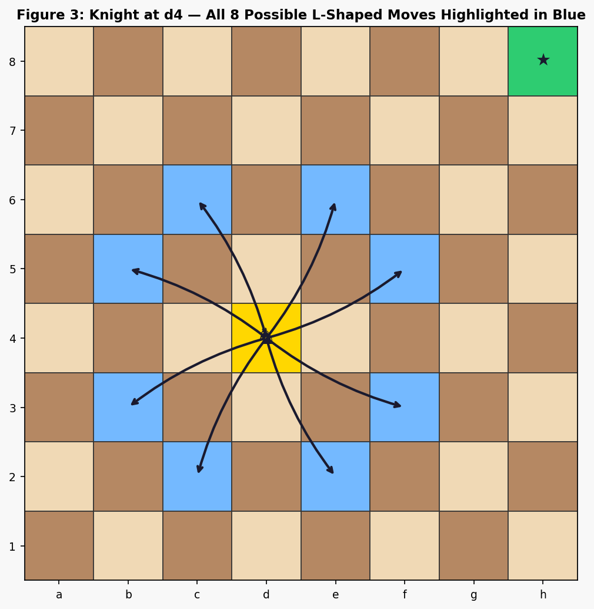
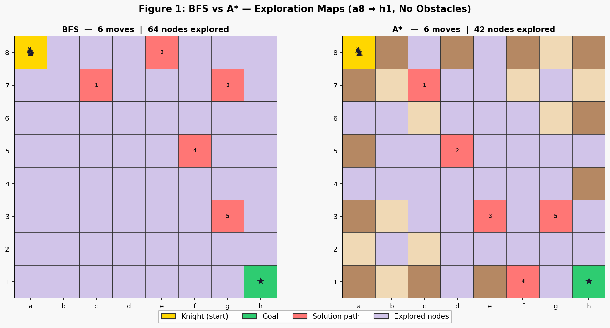
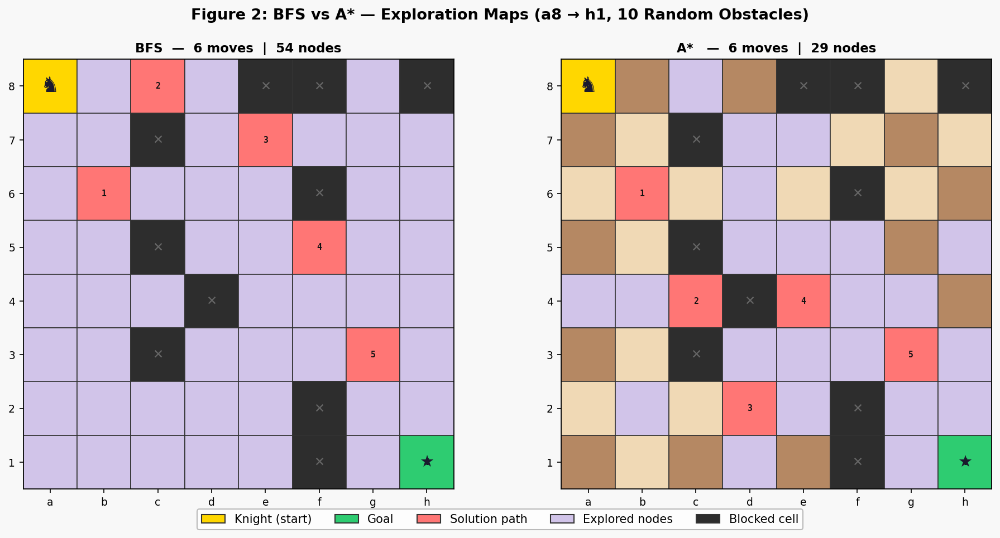
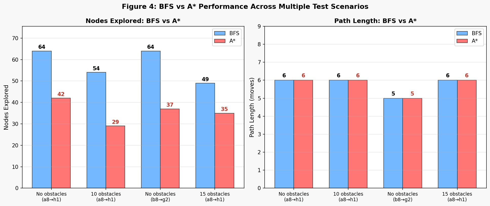

|
|
Pimpri Chinchwad Education Trust's Pimpri Chinchwad College of Engineering |
| Assignment No. 6 | |
| Course:- Artificial Intelligence and Machine Learning | |
| Name:- Aditya Chandrajit Deore | |
| PRN:- 124B1F116 | Batch:- B3 | |
1. Title
Chess Knight Escape: An Interactive AI Pathfinding Game Using State-Space Search, BFS, and A*
2. Aim
To represent the Chess Knight Escape game as a formal state-space search problem by defining its states, legal actions, transition function, and terminal conditions, and to implement Breadth-First Search (BFS) and A* Search algorithms to find the shortest sequence of valid knight moves from a starting square to a goal square on an 8×8 chessboard while avoiding blocked cells. Additionally, to compare both algorithms on search efficiency across multiple board configurations.
3. Problem Statement & Objectives
Problem Statement: Implement an interactive Chess Knight Escape game that is formally modelled as a state-space search problem with defined states, legal actions, transition rules, and goal/terminal states. Use BFS (uninformed) and A* Search (informed, Chebyshev heuristic) to solve the search and compare their optimality and exploration efficiency across 5 distinct board configurations.
Representing games as state-space search problems is a foundational technique in Artificial Intelligence. A game state encodes all information needed to decide the next action; legal actions define how the state can transition; and terminal conditions specify when the game ends. For the Chess Knight, the irregular L-shaped movement creates a sparse, non-uniform graph that clearly illustrates why informed search (A*) can outperform uninformed search (BFS) without sacrificing optimality.
- State-Space Representation: Each board position (row, col) of the knight is a unique state. The complete problem is encoded as a tuple of the current state, blocked cells, and goal state.
- Legal Actions: The 8 L-shaped knight move offsets \((\pm2, \pm1), (\pm1, \pm2)\) filtered by boundary and obstacle constraints.
- Transition Function: Maps (state, action) → next state, verifying the resulting cell is within bounds and not blocked.
- Terminal States: Goal terminal — knight reaches the designated target cell. Failure terminal — no reachable successors remain (unreachable goal).
- Algorithms: BFS (FIFO queue, no heuristic) and A* (min-heap, Chebyshev heuristic \(h(n) = \max(\Delta r, \Delta c) / 2\)).
- Evaluation: Path length (moves) and nodes explored across 5 test scenarios (clear board, partial obstacles, dense obstacles, alternate positions, blocked goal).
4. State-Space Search Problem Formulation
Game implementation in AI begins by rigorously defining the problem as a state-space search. A state-space is a directed graph \((S, A, T, s_0, S_G)\) where each node is a state, each edge is a legal action, \(T\) is the transition function, \(s_0\) is the initial state, and \(S_G\) is the set of goal (terminal) states. For the Chess Knight Escape, this formulation maps directly to the board.
4.1 Formal State-Space Components
| State Space S | Each state \(s \in S\) is a pair \((r, c)\) representing the knight’s current row and column on the 8×8 board. With no additional information needed per state (the board layout is fixed), the total state space is \(|S| = 64\) for an empty board, reduced by the number of blocked cells. Formally: \[ S = \{(r, c) \mid 0 \le r \le 7,\ 0 \le c \le 7,\ (r,c) \notin \text{Blocked}\} \] |
| Initial State s₀ | The initial state is the starting position of the knight, defaulting to a8 = (0, 0) (top-left corner). The user may configure any non-blocked, non-goal cell as the initial state via the GUI. \[ s_0 = (0,\ 0) \quad \text{[a8 by default]} \] |
| Legal Actions A(s) | At state \(s = (r, c)\), the legal actions are the subset of the 8 possible knight-move offsets \((\Delta r, \Delta c)\) that result in a valid, non-blocked cell: \[ A(s) = \{(\Delta r, \Delta c) \mid (r+\Delta r, c+\Delta c) \in S\} \] where \((\Delta r, \Delta c) \in \{(\pm2,\pm1),\ (\pm1,\pm2)\}\). Corner cells have 2 actions; edge cells 3–4; interior cells up to 8. Blocked cells reduce the action set further. |
| Transition Function T | The transition function \(T(s, a)\) maps a current state and a legal action to the resulting next state. It is deterministic — the knight always lands on exactly the target cell: \[ T\bigl((r,c),\ (\Delta r, \Delta c)\bigr) = (r + \Delta r,\ c + \Delta c) \] The transition is only applied when the action is legal (target is in \(S\)). Each transition has uniform cost \(c = 1\) (one move). |
| Goal State S₁ | The goal state is the designated target cell, defaulting to h1 = (7, 7). A state \(s\) is a goal state if: \[ s = s_{\text{goal}} = (7,\ 7) \quad \text{[h1 by default]} \] The search terminates when the goal state is reached. The optimal solution is the shortest sequence of actions from \(s_0\) to \(s_{\text{goal}}\). |
| Terminal States |
The search problem has two types of terminal states:
|
| Path Cost | Because each knight move costs exactly 1, the total path cost equals the number of moves — the path length. Minimising path cost is equivalent to minimising the number of moves. This uniform cost property is what makes BFS optimal (no need for Dijkstra’s general cost handling). \[ \text{Cost of path } \langle s_0, s_1, \ldots, s_n \rangle = n \quad \text{(number of moves)} \] |
4.2 Why This is Not a Minimax Problem
The Knight Escape is a single-agent, fully observable, deterministic search problem — not a two-player adversarial game. Minimax applies to adversarial games (e.g., Chess, Tic-Tac-Toe) where a MAX player maximises score against a MIN opponent who minimises it. Since Chess Knight Escape has only one agent (the knight) with no adversary, BFS and A* — single-agent graph search algorithms — are the correct and more efficient choice.
| Property | Knight Escape (This Assignment) | Adversarial Game (Minimax) |
|---|---|---|
| Number of agents | 1 (knight only) | 2 (MAX and MIN) |
| Environment type | Deterministic | Deterministic / Stochastic |
| Opponent | None — only obstacles | Active adversary |
| Goal | Reach target in minimum moves | Maximise score against opponent |
| Correct algorithm | BFS / A* Search | Minimax / Alpha-Beta Pruning |
| Tree type | Search tree (single agent) | Game tree (two agents, alternating) |
5. Search Algorithms: BFS and A*
Both algorithms explore the state-space graph defined in Section 4. They differ in how they prioritise which state to expand next. BFS uses no domain knowledge (uninformed); A* uses the Chebyshev heuristic (informed) to prefer states that are geometrically closer to the goal.
Breadth-First Search (BFS)
- Initialise a FIFO queue with \(s_0\). Mark \(s_0\) visited.
- Dequeue state \(u\).
- If \(u = s_{\text{goal}}\): reconstruct path via
came_fromand return. (Goal terminal) - For each legal action \(a \in A(u)\), compute \(v = T(u, a)\).
- If \(v\) is unvisited: set
came_from[v] = u, mark visited, enqueue \(v\). - Repeat from step 2 until queue is empty — then report failure. (Failure terminal)
A* Search
- Initialise a min-heap with \((f(s_0), 0, s_0)\). Set \(g(s_0)=0\).
- Pop state \(u\) with minimum \(f = g + h\).
- If \(u = s_{\text{goal}}\): reconstruct path and return. (Goal terminal)
- For each legal action \(a \in A(u)\), compute \(v = T(u, a)\).
- If \(g(u)+1 < g(v)\): update \(g(v)\), set
came_from[v] = u, push \((g(v)+h(v),\ g(v),\ v)\). - Repeat from step 2. Empty heap — report failure. (Failure terminal)
5.1 Chebyshev Heuristic — Admissibility Proof
Define the Chebyshev distance from state \(n = (r_n, c_n)\) to goal \(g = (r_g, c_g)\) as \(\max(|\Delta r|, |\Delta c|)\). Per single knight move, the Chebyshev distance can decrease by at most 2. Dividing by 2 gives an admissible lower bound on moves required:
Since \(h(n)\) never overestimates the true cost \(h^*(n)\), A* with this heuristic is admissible and therefore optimal.
5.2 Step-by-Step f, g, h Calculation (a8 → h1)
| Step | State \(s\) | \(g(n)\) (moves so far) | \(\Delta r\) | \(\Delta c\) | \(h(n) = \max/2\) | \(f(n) = g+h\) |
|---|---|---|---|---|---|---|
| Initial | (0,0) a8 | 0 | 7 | 7 | 3.5 | 3.5 |
| Move 1 | (1,2) c7 | 1 | 6 | 5 | 3.0 | 4.0 |
| Move 2 | (3,3) d5 | 2 | 4 | 4 | 2.0 | 4.0 |
| Move 3 | (4,4) e4 | 3 | 3 | 3 | 1.5 | 4.5 |
| Move 4–5 | (5,6) g3 | 5 | 2 | 1 | 1.0 | 6.0 |
| Move 6 | (7,7) h1 | 6 | 0 | 0 | 0.0 | 6.0 ✅ |
The heuristic \(h(n)\) decreases monotonically toward 0 as the knight approaches the goal, ensuring A* always expands the most promising state first. This keeps \(f(n)\) near-constant (consistent heuristic), preventing re-expansion of already-visited nodes.
The diagram below visualises the local state-space graph centred on the knight at d4 (row 4, col 3). Each blue-highlighted cell is a successor state reachable by a single legal action (L-shaped jump). Arrows show the directed transition \(T(s, a)\) from the current state to each successor. The goal state (green ★) is visible at the top-right, and the heuristic \(h(n)\) decreases for successors geometrically closer to it, directing A* to expand those first.

Figure 1: Local state-space graph — knight at d4. Blue cells = successor states (legal actions). Arrows = transition function \(T(s,a)\). Each transition costs 1 move. Interior squares yield 8 successors; corner/edge squares fewer.
The side-by-side maps compare the explored state sets of BFS (left) and A* (right) on a clear board. Both algorithms reach the same goal terminal state h1 in exactly 6 moves (optimal), confirming both are complete and optimal for this single-agent state-space. However, BFS expanded all 64 states (no domain knowledge — it cannot distinguish states closer to the goal from those further away), while A* used the Chebyshev heuristic to focus on 42 states — a 34% reduction. Lavender cells were expanded but not on the final path; orange-red cells form the solution path.

Figure 2: BFS (left, 64 states expanded) vs A* (right, 42 states expanded) on a clear board — a8 → h1. Both reach the goal terminal state in 6 moves. A* explores 34% fewer states by prioritising successors with lower \(f = g + h\).
Blocked cells remove states from the state space and eliminate associated legal actions. With 10 obstacles placed, the effective state space shrinks from 64 to 54 states. Both algorithms correctly navigate around blocked states, still reaching the goal terminal h1 in 6 moves. A* now explores only 29 states vs BFS’s 54 — a 46% reduction. The heuristic becomes even more valuable with obstacles because it avoids exploring blocked dead-ends in the wrong direction.

Figure 3: BFS (left, 54 states) vs A* (right, 29 states) with 10 blocked states — a8 → h1. Dark cells with ✕ are removed from the state space. Both find the 6-move optimal path; A* explores 46% fewer states.
The charts compare BFS and A* across four solvable board configurations (a fifth scenario with a surrounded goal results in a failure terminal state for both algorithms). The left chart shows states explored (lower = more efficient use of the state space); the right shows path length (both always agree — confirming mutual optimality). A* consistently outperforms BFS in exploration efficiency across all configurations while never sacrificing path quality.

Figure 4: States explored (left) and path length (right) for BFS vs A* across 4 solvable scenarios. A* explores 29–46% fewer states in all cases. Path lengths are always identical, confirming both algorithms are optimal state-space search methods for this problem.
10. Experimental Results — All 5 Test Cases
| Scenario | Start → Goal | Blocked States | BFS Moves | BFS States | A* Moves | A* States | Reduction | Terminal |
|---|---|---|---|---|---|---|---|---|
| 1. Clear board | a8 → h1 | 0 | 6 | 64 | 6 | 42 | −34% | Goal ✅ |
| 2. Sparse obstacles | a8 → h1 | 10 | 6 | 54 | 6 | 29 | −46% | Goal ✅ |
| 3. Alternate positions | b8 → g2 | 0 | 5 | 64 | 5 | 37 | −42% | Goal ✅ |
| 4. Dense obstacles | a8 → h1 | 15 | 6 | 49 | 6 | 35 | −29% | Goal ✅ |
| 5. Goal surrounded | a8 → h1 | 4 (around goal) | No path | 59 | No path | 59 | 0% | Failure ❌ |
10.1 BFS vs A* — Complete Comparison
| Property | BFS | A* Search |
|---|---|---|
| Search type | Uninformed (no heuristic) | Informed: \(f(n) = g(n) + h(n)\) |
| Completeness | ✓ Always finds path if one exists | ✓ Always finds path if one exists |
| Optimality | ✓ (uniform edge cost = 1) | ✓ (admissible Chebyshev heuristic) |
| Failure detection | ✓ Reports when frontier is empty | ✓ Reports when heap is empty |
| Average states explored | 57.8 (4 solved cases) | 35.8 (−38%) |
| Best case reduction (A*) | — | −46% (Scenario 2) |
11. Conclusion
The Chess Knight Escape game was successfully formulated as a formal state-space search problem and implemented with a Tkinter GUI supporting Manual Play, AI‑BFS, and AI‑A* modes.
- State-Space Formulation: The game was rigorously defined with 64 states (board cells), 8 legal actions (L-shaped knight offsets), a deterministic transition function, one goal terminal state (target cell reached), and one failure terminal state (frontier exhausted without reaching goal).
- Algorithm Selection: Since Knight Escape is a single-agent deterministic search problem (not adversarial), BFS and A* are the correct algorithms. Minimax would be inappropriate as there is no opponent or game tree.
- Optimality of Both Algorithms: BFS is optimal due to uniform edge cost (1 move per action). A* is optimal due to the admissible Chebyshev heuristic \(h(n) \le h^*(n)\). Both always agree on minimum path length across all 5 test cases.
- A* Efficiency: By exploiting domain knowledge through the heuristic, A* explored 29–46% fewer states than BFS across solvable scenarios, clearly demonstrating the power of informed state-space search over uninformed search without sacrificing optimality or completeness.